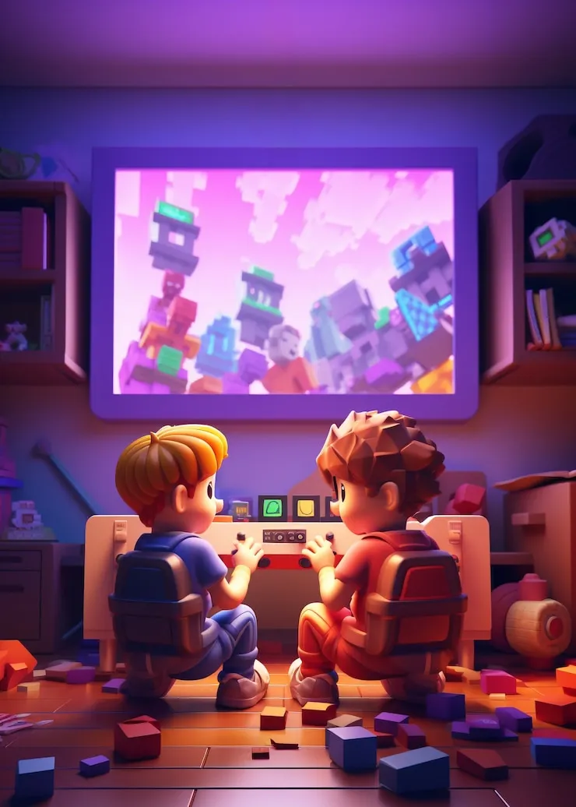
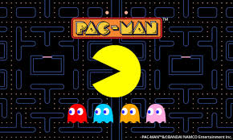
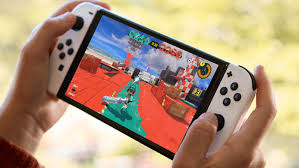
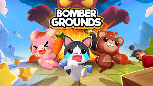
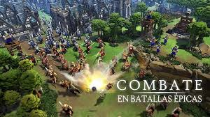
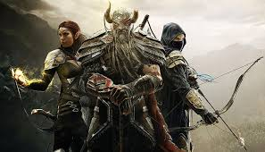
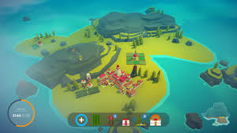
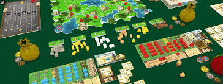
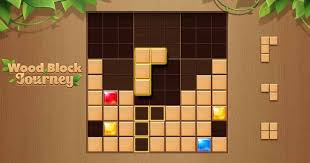

Juega en línea en todas las categorias, descubre juegos diveridos nuevos a diario y mucho más!!

Estos juegos suelen requerir planificación, toma de decisiones y resolución de problemas, lo que puede ser atractivo para personas con carácter analítico y perseverante.
Un juego de estrategia en tiempo real (RTS) donde los jugadores construyen civilizaciones y luchan por la supremacía en diferentes épocas.
Un juego de estrategia por turnos donde los jugadores construyen civilizaciones, gestionan recursos, y avanzan tecnológicamente para lograr la victoria.
Un juego de estrategia en línea multijugador (MOBA) donde dos equipos de cinco jugadores se enfrentan en un mapa para destruir la base del oponente.
Un juego de estrategia masivo en línea (MMO) que combina la construcción y gestión de reinos con el combate.
Un juego de estrategia y sigilo donde los jugadores deben planificar y ejecutar movimientos tácticos para completar objetivos.
Un juego de estrategia que se centra en la construcción de ciudades y la gestión de recursos, con un enfoque en la defensa y el combate.
Un juego de estrategia donde los jugadores deben controlar un ejército de hormigas para conquistar y expandir su territorio.
Un juego de estrategia en tiempo real clásico con dos facciones que luchan por el control de una sustancia tóxica, el tiberium.
Un juego de estrategia en tiempo real donde los jugadores construyen bases, entrenan unidades y luchan contra otros jugadores en diferentes facciones.
Un juego de estrategia en línea donde los jugadores construyen ciudades, gestionan recursos, y luchan por la supremacía a través de diferentes épocas.
Un juego de estrategia donde los jugadores representan potencias mundiales y deben equilibrar las relaciones internacionales para alcanzar la victoria.
Un juego de estrategia donde los jugadores representan potencias nucleares y deben planificar y ejecutar ataques para lograr la victoria.
Un juego de estrategia en tiempo real con elementos de simulación histórica, ambientado en la época de los Tercios españoles.
Un juego de estrategia en tiempo real ambientado en un mundo medieval habitado por dinosaurios.
Un juego de estrategia y construcción de reinos con elementos roguelite.
Un juego de estrategia en tiempo real donde los jugadores pueden crear y comandar ejércitos de robots gigantes para conquistar planetas.
Un juego de estrategia en tiempo real de ciencia ficción donde los jugadores lideran un escuadrón de Marinespaciales.
Un juego de estrategia en línea gratis donde los jugadores construyen bases, entrenan unidades y luchan por la supremacía galáctica.
Un juego de estrategia en línea donde los jugadores defienden su trono contra las invasiones.
Un juego de estrategia en línea multijugador donde los jugadores construyen ejércitos, gestionan recursos y luchan contra otros jugadores.
Un juego de estrategia en línea donde los jugadores construyen ejércitos, gestionan recursos y luchan por el control de territorios.
Un juego de estrategia en línea donde los jugadores construyen reinos, gestionan recursos y luchan contra otros jugadores.
Un juego de estrategia en línea donde los jugadores exploran y cosechan en Alaska.
Un juego de estrategia en línea donde los jugadores construyen bases, entrenan unidades y luchan contra otros jugadores.
Un juego de estrategia de puzzle donde los jugadores deben resolver acertijos para liberar tornillos.
Un juego de estrategia de puzzle donde los jugadores deben intercambiar torres para completar niveles.

En estos juegos, los participantes asumen roles y pueden interactuar con otros jugadores, creando escenarios imaginarios y desarrollando habilidades sociales.
Un clásico MMORPG de fantasía con una gran comunidad y un mundo extenso para explorar.
Un MMORPG con una historia profunda y combates de acción, inspirado en la serie de videojuegos de Final Fantasy.
Un MMORPG con un sistema de combate dinámico y un mundo abierto con numerosos eventos y actividades.
Un MMORPG con un mundo abierto detallado, un sistema de combate complejo y una gran variedad de actividades sociales y económicas.
Un MMORPG ambientado en el universo de Elder Scrolls, con un gran mundo para explorar y un sistema de combate de acción.
Un MMORPG ambientado en el universo de Star Wars, con una historia original y combates de rol.
Un MMORPG en desarrollo con un enfoque en el mundo y su economía, donde los jugadores pueden influir en el juego a través de sus acciones.

Los juegos de exploración pueden ser ideales para personas curiosas y amantes de la aventura, que disfrutan descubriendo nuevos lugares o conocimientos.
Un clásico MMORPG con vastos continentes, biomas diversos, ciudades, mazmorras y una gran cantidad de misiones para explorar.
Otro MMORPG popular con un mundo hermoso y detallado, lleno de zonas únicas, ciudades impresionantes y secretos por descubrir.
Ofrece un mundo dinámico con eventos que cambian y zonas que se adaptan, fomentando la exploración constante.
Basado en el universo de Elder Scrolls, permite explorar Tamriel con una gran libertad, descubriendo ruinas, cuevas y ciudades.
Un MMORPG con un enfoque en la exploración de una isla misteriosa y peligrosa, llena de recursos y criaturas.
Aunque no es exclusivamente "en línea" en su concepto base, la mayoría de la gente lo juega en servidores multijugador, donde la exploración de mundos generados proceduralmente es fundamental.
Un juego de supervivencia vikingo con un mundo vasto y procedural que anima a los jugadores a explorar diferentes biomas para encontrar recursos y derrotar jefes.
Un juego de supervivencia PvP con un mundo abierto persistente que requiere exploración constante para encontrar recursos, construir bases y sobrevivir.
Survival Evolved: Combina supervivencia, crafteo y domesticación de dinosaurios en un mundo expansivo lleno de biomas diversos.
Aunque es un juego de rol de acción con gachapon, su mundo abierto es inmenso y está diseñado para ser explorado a fondo, con puzles, cofres y secretos.
Un juego de exploración espacial con un universo proceduralmente generado que ofrece billones de planetas para descubrir, cada uno con su propia flora, fauna y condiciones.
Aunque es un shooter, tiene zonas de mundo abierto y actividades que requieren exploración para encontrar secretos, loots y completar misiones.
Un juego de terror cooperativo donde la exploración de lugares embrujados es crucial para encontrar pistas y sobrevivir.
Aunque más un juego de deducción social, la exploración de los mapas para completar tareas y evitar al impostor es una parte fundamental.
Algunos juegos generan sus mundos de forma procedural (como Minecraft o No Man's Sky), lo que significa una exploración infinita, mientras que otros tienen mundos diseñados a mano con ubicaciones fijas.
La exploración puede ser para encontrar recursos, desvelar la historia, descubrir secretos, o simplemente por el placer de ver nuevos lugares.

Estos juegos permiten a los participantes expresar su creatividad, como juegos de dibujo, escritura o construcción.
Permite crear una variedad de juegos de puzzles, como crucigramas, sopas de letras, juegos de memoria, juegos de emparejar, etc.
Una plataforma popular donde los usuarios pueden crear sus propios juegos, desde juegos de aventura hasta juegos de construcción.
Un juego de creación en línea donde se combina elementos para descubrir nuevos.
Una plataforma para crear juegos de búsqueda del tesoro en la vida real, que pueden ser compartidos en línea.
Plataformas como Interacty permiten crear hojas de trabajo interactivas con diferentes tipos de actividades y juegos.
Un juego de construcción y supervivencia en un mundo de bloques.
Permite crear juegos de trivia y cuestionarios interactivos para clases en línea.
Permite crear presentaciones interactivas y juegos educativos para clases en línea.
Una plataforma de colaboración y creación de contenido, que puede ser utilizada para crear juegos y actividades en línea.

Los juegos de mesa, cartas o de interacción pueden ser ideales para personas sociables que disfrutan de la interacción y la competencia.
Juego de construcción y exploración que permite a los jugadores colaborar en la creación de estructuras, y socializar en servidores multijugador.
Juego de batalla real que ofrece partidas multijugador, eventos sociales, y la posibilidad de interactuar con otros jugadores a través de chat.
Juego de simulación de vida que permite a los jugadores crear sus propias familias, construir casas, y socializar con otros jugadores en entornos virtuales.
Juego de estrategia en línea para múltiples jugadores (MOBA) que permite la colaboración en equipo y la interacción con otros jugadores en partidas competitivas.

Para personas que buscan relajarse, se pueden recomendar juegos que involucren actividades físicas, como yoga o baile, o juegos de concentración mental.
Rompecabezas como Tetris, Sudoku o juegos de piezas que debes unir para crear imágenes relajantes.
Explora entornos naturales virtuales, como bosques, playas o montañas, y realiza actividades como plantar árboles, alimentar peces o simplemente disfrutar del paisaje.
Sigue el ritmo de música relajante y presiona teclas o botones en sincronía con la melodía.
Colorea imágenes relajantes, como mandalas o paisajes, utilizando diferentes colores y técnicas.
Colorea imágenes relajantes, como mandalas o paisajes, utilizando diferentes colores y técnicas.
Participa en sesiones guiadas de meditación o realiza ejercicios de respiración profunda mientras interactúas con elementos visuales relajantes.